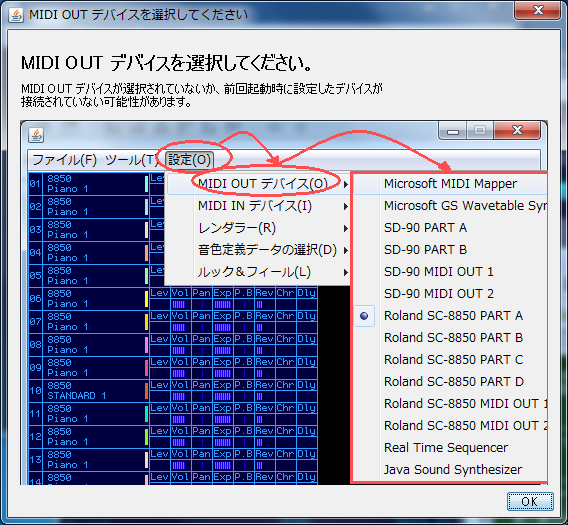
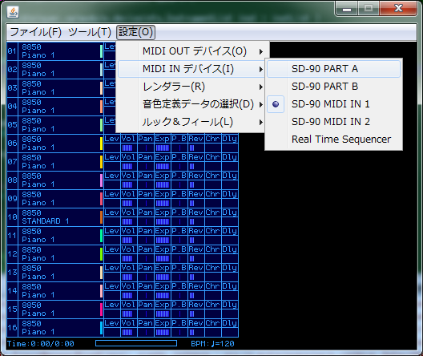
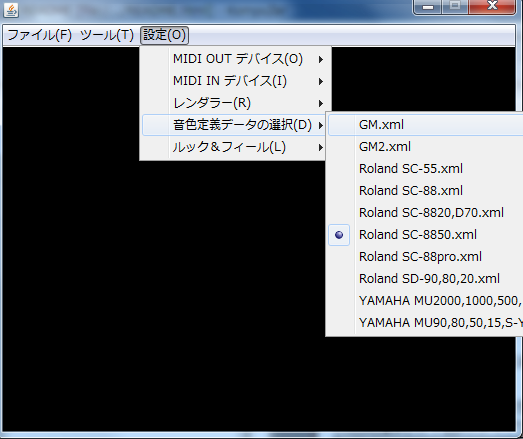
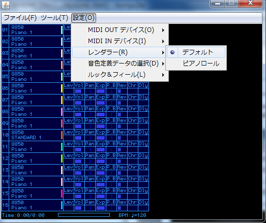
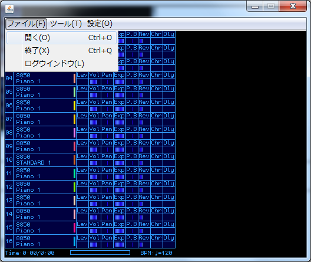
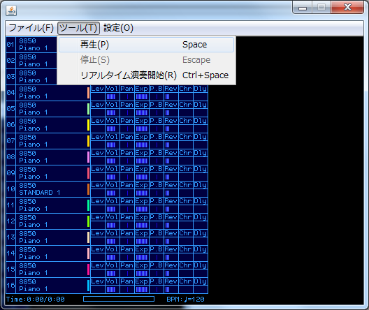

MIDIPlayer - version 0.2.x
Author
rz
Web
目次
概要
作者自身が MIDI 系の動画を
ニコニコ動画に投稿していて、ふと
TMIDI Player と MAMPlayer を足して２で割ったソフトがあればなぁと思い作りはじめました。
（現状、観賞用というよりかは、自身で作成したMIDIデータの再生画面キャプチャ用を想定しています）
ニコニコ動画で使用可能な動画サイズである 512x384 での表示を行い、リサイズ無しでキャプチャすることを視野に入れています。
特徴としてはこんな感じです。
- MAMPlayer ではエクスクルーシブデータなどが送信されない制限事項がありますが（MAMPlayer のマニュアルの制限事項に記載されています）本ソフトはフィルタは掛けていません
- 画面レンダリングをプレーヤー本体からプラグインとして分離しているので追加がで可能です
- MIDI キーボードなどのMIDI IN デバイスの設定を行うことで、MIDI ファイルのデータ再生中の入力や、リアルタイム入力を行うことが可能です
実行に必要な環境
このソフトは Java を使用しているため、別途ランタイムのインストールが必要です。
あらかじめご了承くださいませ。バージョンは 6 以上が必要です。
Java ランタイムは下記 URL からインストールできます。
http://www.java.com/
開発時の動作確認環境
下記環境にて動作確認を行っています。
※Mac OS X 環境が手元に無いため、確認には至っていません…
OS
- Windows 7 (x64) *32bit 版 Java ランタイムにて
- Ubuntu 8.0.4
MIDI デバイス
- Roland SC-8850
- Roland SD-90
起動方法
Windows
32bit 版 Windows
下記の環境が該当します。
- 32bit Windows
- 64 bit (x64) Windows にて 32bit 版の Java ランタイムをインストールしている場合
同梱のバッチファイル
MIDIPlayer-win32.bat を実行（エクスプローラ上でダブルクリック）してください。
64bit 版 Windows
下記の環境が該当します。
- 64 bit (x64) Windows にて 64bit 版の Java ランタイムをインストールしている場合
同梱のバッチファイル
MIDIPlayer-win64.bat を実行（エクスプローラ上でダブルクリック）してください。
Mac OS X / Linux
同梱のシェルスクリプト
MIDIPlayer-macosx.sh を実行してください。
Linux
お使いの環境に合わせ、下記のどちらかのシェルスクリプトを実行してください。
- MIDIPlayer-linux-amd64.sh
- MIDIPlayer-linux-i586.sh
初回起動時の設定
MIDI OUT デバイスの選択
MIDI データの再生に使用するデバイスを設定してください。
初回起動時に下図のダイアログを表示します。
※図の一覧は例であり、デバイス一覧内容はお使いのPC環境によって異なります。

MIDI IN デバイスの選択
もし、キーボードなどの MIDI IN 機器を接続されている場合、選択をすることで、
MIDI ファイル再生時や、
リアルタイム演奏時に入力を受け付けるようにしています。
※図の一覧は例であり、デバイス一覧内容はお使いのPC環境によって異なります。

音源定義ファイルの選択
お使いの音源機種名の項目をお選びください。
主に再生時に楽器名を表示する場合に参照し、画面に反映をする等の物です。
お使いの機種が無い場合は 対応GM規格の物をお選びください。
※この定義ファイルは外部化されていますので、プログラム修正無しに後から追加・修正が可能です。
※ファイルが置き場所は
data/device/*.xml です。

レンダラーの選択
MIDI データ再生時に画面に表示を行う種類を選択します。
レンダラーはプラグイン形式となっているので、後から追加を行うことを可能なようにしています。
デフォルトでは２つのプラグインを同梱しています。

MIDI ファイルの再生
ファイルの選択
「
ファイル」メニューから「
開く」を選択（または
Ctrl+O）、再生したい MIDI ファイルを選んでください。

再生
「
ツール」メニューから「
再生」を選択（またはスペースキーを押す）してください。

停止
「
ツール」メニューから「
停止」を選択（またはESCキーを押す）してください。
リアルタイム演奏
「
ツール」メニューから「
リアルタイム演奏開始」を選択（またはCtrl+スペースキーを押す）してください。
これは、
MIDI IN デバイスを設定している場合に有効です。
演奏を終了する場合は「停止」を選んでください。
これは、 MIDI IN デバイスから受信した MIDI 信号を MIDI OUT デバイスに送出します。
例えば、MIDI キーボードを使用して鍵盤を弾いた際に、それが画面へ反映されます。
アンインストール
レジストリ（Windows）などは使用していませんので、このアプリのディレクトリ（フォルダ）そのものを消していただければそれで完了です。
ログファイル
現状、ログをテキストファイル(log.txt)に出力を行うようにしています。
正常に動作しない場合、バグフィックス時の有力な情報となりますので、うまく動かない場合にこのファイルの提供をお願いすることがあります。
音源定義ファイル
<後日整理する予定です>
プラグインについて
<後日整理する予定です>
ライセンス
本ソフトは 修正 BSD ライセンス にて公開しています。
詳細は license/LICENSE.txt をお読みください。
（その他、このソフトが使用している外部ライブラリのライセンスについては license ディレクトリ以下にあります）
制限事項
- MIDIフォーマット1 の MIDI ファイルの再生には対応していません。
複数ポートの同時使用はできません
- ピアノロールのレンダリングなど演奏中の画面表示について
ソフトウエェア音源などレイテンシーが発生する音源では表示と実際の発音が合わない可能性があります。
謝辞
- 楓音 凛 様
このソフトのブラッシュアップを行う前の段階のバージョンにて音色定義ファイルを作成して頂きました。
本バージョンにて定義したフォーマットにコンバートし、組み込ませていただいています。
- Roland SD-20/80/90/SC-8820/D70
- Roland SC-88pro, SC-88, SC-55
- YAMAHA MU2000,1000,500,128,100
- YAMAHA MU90,80,50,15,S-YXG50
- TMIDI Player
再生画面の参考にさせて頂いています。
- MAM Player
再生画面の参考にさせて頂いています。
- ニコニコ動画で MIDI 関連の動画を投稿してきた先人の方々
ニコニコ動画上で MIDI 関連の投稿を見つけた（2007年の12月頃）のがきっかけで、自身も投稿，およびこのソフトの作成をするようになりました。
履歴
- 2010/03/21
- プレーヤー本体側の不具合、GS系のドラムパート設定の不具合を修正。
- OpenGL ライブラリの同梱
- 3D ピアノロールプラグインの同梱を開始
- 起動用バッチファイルの修正、プラットフォーム・アーキテクチャ毎に振り分けを行った
- 音源定義ファイルの仕様変更
- MIDI規格毎の設定ファイルの仕様変更
- 2010/03/05
初版/暫定版